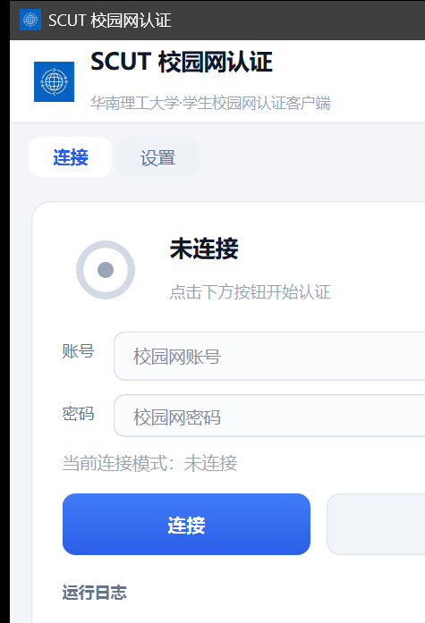

有线 + 无线双模
网线插入走 802.1X；未插网线且命中白名单 Wi-Fi 时走 Dr.COM Web Portal，自动识别门户、模拟浏览器登录并按官方接口确认上线——无需手动选择方式。
01 — 功能特性
有线 802.1X 与无线 Web Portal，从认证到重连，一切都在后台安静完成。
网线插入走 802.1X；未插网线且命中白名单 Wi-Fi 时走 Dr.COM Web Portal，自动识别门户、模拟浏览器登录并按官方接口确认上线——无需手动选择方式。
被服务器踢下线自动重连；凌晨 0:00–6:00 强制下线后，静候至 6:00 自动恢复，无需任何手动操作。
支持 Windows 计划任务开机自启，静默模式（--silent）下自动连接；托盘常驻；静态 IP 自动配置，断开时恢复 DHCP。
02 — 界面展示
连接、认证、断连状态与当前连接模式实时可见；账号密码直接输入，回车即连接。

未连接 · 点击下方按钮开始认证
截图可能随版本更新，以实际程序界面为准
03 — 使用流程
无需切换方式——插入网线走有线，未插网线且连接校园 Wi-Fi 时自动走无线。
输入学号与密码（可记住密码）。有线网卡参数自动检测，静态 IP 与 DNS 可选配置。
点「连接」或直接回车。自动按“有线优先、无线兜底”发起认证，全程在后台完成。
最小化到托盘，开机静默启动自动连接；被踢下线自动重连，夜间断网晨间自动恢复。
04 — 常见问题
关于权限、依赖与夜间断网的说明，都在这里。
免费 · 开源
专为华工校园网打造，支持 Windows 10 / 11 x64，有线与校园 Wi-Fi 通用。
前往 GitHub Releases或访问 GitHub 仓库 查看源码与安装说明